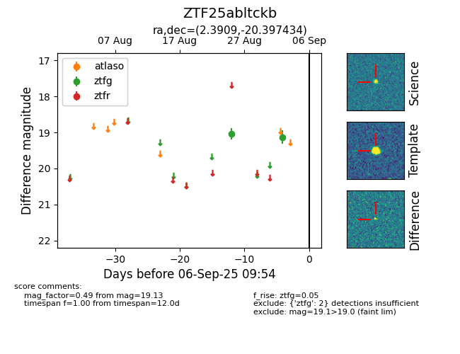

FINK: ZTF25abltckb
Lasair: ZTF25abltckb
ALeRCE: ZTF25abltckb
ZTF25abltckb (ztf,fink)
equatorial (ra, dec) = (2.3909,-20.39743)
galactic (l, b) = (65.8120,-78.29989)

last ztfg=19.13
2 ztfg detections